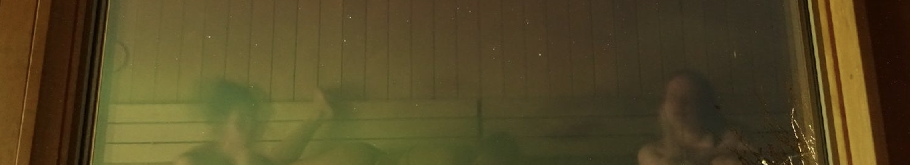
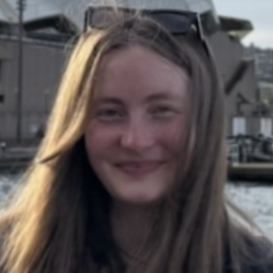

PhD · Statistics for Quantitative Ecology
University of St Andrews, Scotland


(she/her) PhD Student • Centre for Research into Ecological and Environmental Modelling • University of St Andrews School of Mathematics and Statistics
I am a PhD student in quantitative ecology at the Centre for Research into Ecological and Environmental Modelling and Scottish Oceans Institute since 2024. My research sits at the intersection of bioacoustics, marine mammal science, statistics and computing.
My PhD focuses on quantitative methods to estimate harbour porpoise density from automated click detector data, but I have worked with a wide range of data, including but not limited to, animal-borne tag movement and acoustic data, broadband acoustic data, drone data and opportunistic and systematic visual survey data.
University of St Andrews, Scotland
Lund University, Sweden
University College Dublin, Ireland
San Juan, Puerto Rico
Dundee, Scotland
University of St Andrews, Scotland
University of St Andrews, Scotland
Lund University, Sweden
Norden, Germany
St Andrews, Scotland
Dublin, Ireland
Dublin, Ireland
Hartmann D, JDJ Macaulay, L Rojano-Doñate, J Teilmann, SL Elmegaard, PT Madsen, U Siebert, P Tyack, L Thomas. Acoustic detection probability of harbour porpoises depends on behaviour, detection unit and click-train classification. J Acoust Soc Am. 2026.
San Juan, Puerto Rico
Dundee, Scotland
Lund, Sweden
Roskilde, Denmark
St Andrews, Scotland
Glasgow, Scotland
St Andrews, Scotland
Kerteminde, Denmark
Azores, Portugal
St Andrews, Scotland
Lund, Sweden
Lyngby, Denmark